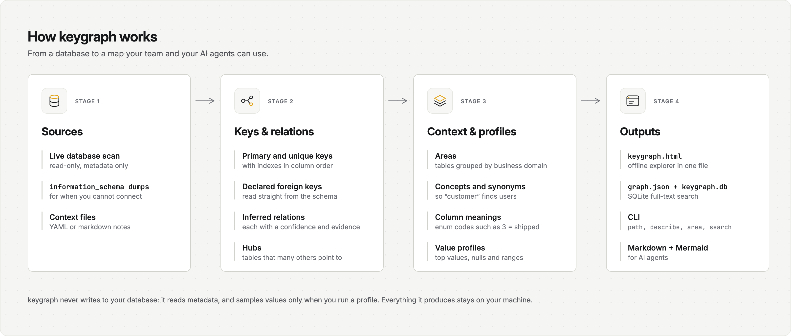
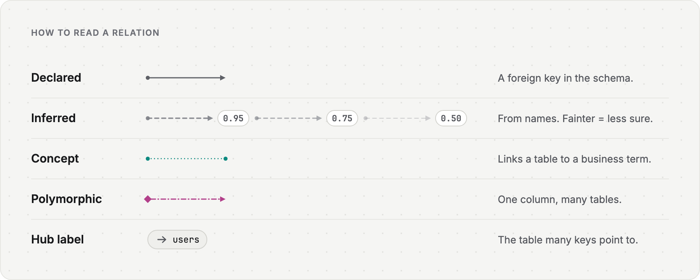
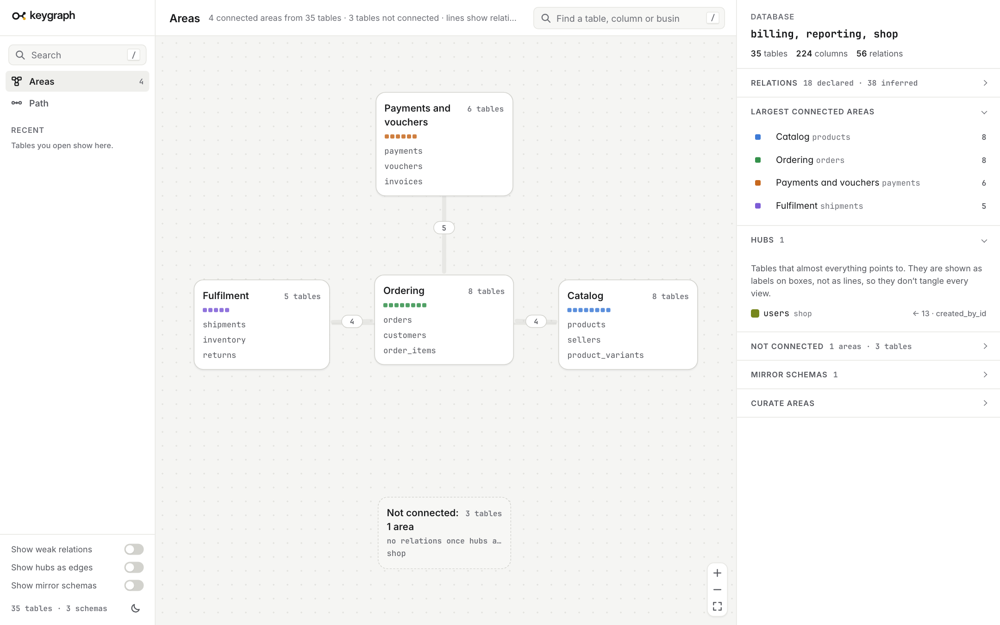
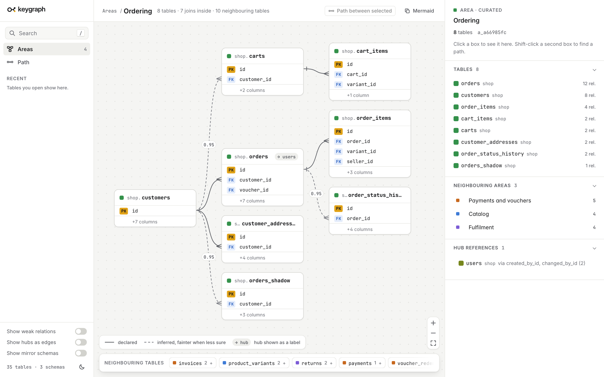
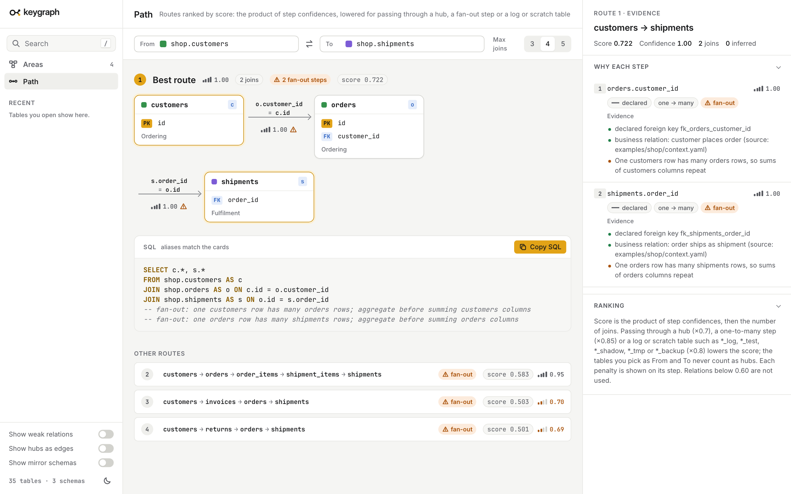
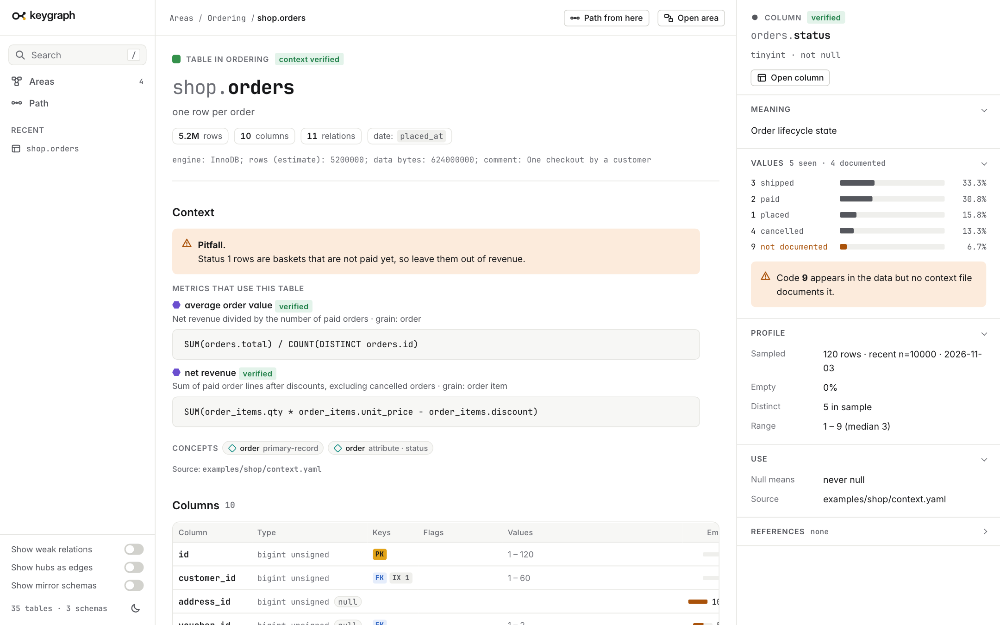
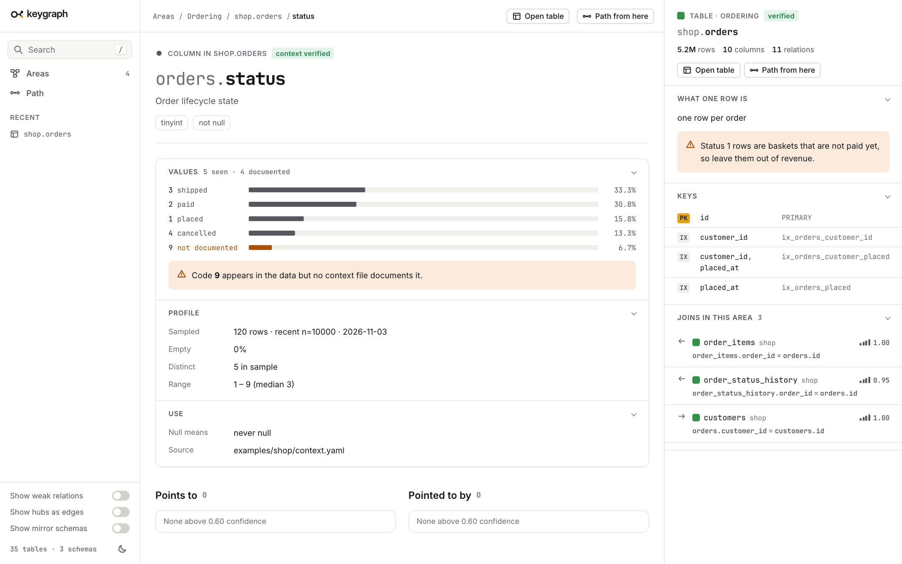
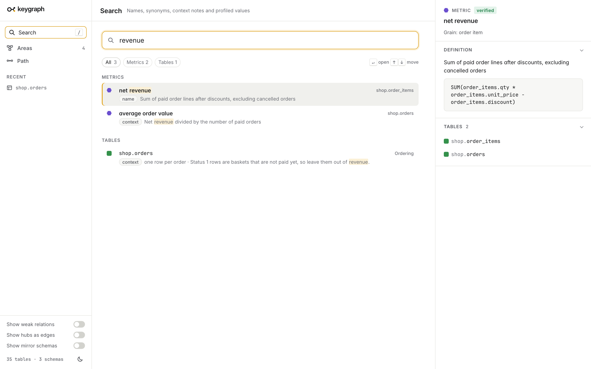

<style id="rs">:root{--canvas:#F5F5F3;--surface:#FFFFFF;--s2:#F7F7F5;--s3:#EFEFEC;--border:#E6E6E2;--border2:#D2D2CD;--text:#17181A;--text2:#55575D;--text3:#6C6E75;--accent:#E2A317;--accent-text:#8A5D00;--accent-soft:#FBF0D6;--warn:#A9520A;--warn-soft:#FCEBDC}
*{box-sizing:border-box;hyphens:manual !important}
html,body{margin:0;background:var(--canvas)}
body{font-family:"Inter",sans-serif;color:var(--text);font-size:10.8pt;line-height:1.5}
code,pre{font-family:"JetBrains Mono",monospace}
code{font-size:8.6pt;background:var(--s3);padding:0.5px 3px;border-radius:3px}
.page{width:297mm;height:209.5mm;padding:12mm 15mm 10mm;position:relative;overflow:hidden;break-after:page;background:var(--canvas);display:flex;flex-direction:column}
.kicker{font-size:8pt;font-weight:600;letter-spacing:.07em;text-transform:uppercase;color:var(--accent-text)}
h1{font-size:19pt;line-height:1.2;font-weight:700;letter-spacing:-.015em;margin:2mm 0 2mm}
.lead{font-size:10.4pt;color:var(--text2);margin:0 0 4mm;max-width:250mm}
h3{font-size:10pt;font-weight:600;margin:0 0 1.5mm;letter-spacing:-.005em}
.body{flex:1;min-height:0}
footer{display:flex;align-items:center;gap:2.5mm;font-size:8pt;color:var(--text3);border-top:1px solid var(--border);padding-top:2.2mm;margin-top:2mm}
.fmark{height:4mm}.pn{margin-inline-start:auto;font-family:"JetBrains Mono",monospace}
.cols2{display:grid;grid-template-columns:1fr 1fr;gap:8mm}
.cols2>div{min-width:0}
ul{margin:0 0 3mm;padding-inline-start:4.5mm}li{margin-bottom:1.6mm}
p{margin:0 0 2.6mm}.small{font-size:8.8pt;color:var(--text2)}
pre.cli{background:var(--surface);border:1px solid var(--border);border-radius:7px;padding:3mm 3.5mm;font-size:7.8pt;line-height:1.42;white-space:pre-wrap;overflow-wrap:anywhere;margin:0 0 3mm;color:var(--text)}
pre.cli.small{font-size:7.4pt}
.dense pre.cli{font-size:6.9pt}
.dense .small,.dense p{font-size:9.6pt}
.callout{background:var(--accent-soft);border-left:3px solid var(--accent);border-radius:5px;padding:2.4mm 3.5mm;margin:3mm 0 0;color:var(--text)}
.stats{display:grid;grid-template-columns:repeat(5,1fr);gap:4mm;margin-bottom:3mm}
.stats div{background:var(--surface);border:1px solid var(--border);border-radius:10px;padding:3mm 4mm}
.stats b{display:block;font-size:20pt;letter-spacing:-.02em;font-weight:700}.stats span{font-size:8.6pt;color:var(--text2);line-height:1.3;display:block}
img.wide{width:100%;display:block;margin-top:4mm;border-radius:10px}
img.small-img{width:46%;margin-inline:auto}
img.mid{width:46%;margin-inline:auto}
table.t{width:100%;border-collapse:collapse;background:var(--surface);border:1px solid var(--border);font-size:8.8pt;margin-bottom:3mm}
table.t th{text-align:start;background:var(--s2);font-size:8pt;letter-spacing:.04em;text-transform:uppercase;color:var(--text2);padding:1.6mm 2.6mm;border-bottom:1px solid var(--border);white-space:normal;vertical-align:bottom}
table.t td{padding:1.5mm 2.6mm;border-bottom:1px solid var(--border);vertical-align:top}
tr{break-inside:avoid}
.viewrow{display:grid;grid-template-columns:203mm 1fr;gap:7mm;align-items:start}
figure.shot{margin:0;border:1px solid var(--border2);border-radius:10px;overflow:hidden;box-shadow:0 1px 2px rgba(23,24,26,.06),0 6px 16px -4px rgba(23,24,26,.12);background:#fff}
figure.shot img{display:block;width:100%}
aside.notes{background:var(--surface);border:1px solid var(--border);border-radius:10px;padding:4mm}
aside.notes ul{margin:0;font-size:9pt}
.cover{padding:16mm 18mm;background:var(--canvas)}
.cover .logo{height:11mm;align-self:flex-start;margin-bottom:7mm}
.cover h1{font-size:30pt;margin:0 0 3mm}
.cover .lead{font-size:12.5pt;max-width:200mm}
.cover img.wide{width:66%;margin-top:5mm;border:1px solid var(--border)}
.toc{columns:2;margin:4mm 0 0;font-size:9.6pt;color:var(--text2);padding-inline-start:5mm}
.cover .small{margin-top:auto}
</style><script>document.head.appendChild(document.getElementById('rs'))</script>
<section class="page cover">

<h1>How keygraph works</h1>
<p class="lead">From a database to a map that people and AI agents can use. Each step shows real output from the demo webshop in examples/shop.</p>

<ol class="toc"><li>What it is</li><li>Connect a source</li><li>Keys, indexes and inferred relations</li><li>Hubs and areas</li><li>Business context and value profiles</li><li>Code index and query log</li><li>The six explorer views</li><li>How an agent uses it</li></ol>
<p class="small">Open source, MIT licence. Everything shown here is fictional.</p>
</section>
<section class="page ">
<header><div class="kicker">Overview</div><h1>keygraph turns a database's keys into a map you can query</h1><p class="lead">It reads a database's structure, works out how its tables relate, adds what the business calls things, and writes an explorer for people and plain files for AI agents. It does this without calling an LLM, so the same input always gives the same output.</p></header>
<div class="body"><div class="stats">
<div><b>35</b><span>tables in 3 schemas</span></div><div><b>56</b><span>relations: 18 declared, 38 inferred</span></div>
<div><b>4</b><span>business areas</span></div><div><b>1</b><span>hub table (users)</span></div><div><b>1</b><span>mirror schema (reporting)</span></div></div>
<div class="cols2">
<div><h3>What you get</h3><ul>
<li><b>A map.</b> Every primary key, unique key and index (with column order), every declared foreign key, and the relations that were never declared, each with a confidence score and the evidence behind it.</li>
<li><b>Meaning.</b> Concepts, metrics, column codes ("3 = shipped") and what one row of a table is, so a search for "revenue" finds the right table.</li>
<li><b>Real values.</b> Top values, empty rates and ranges sampled from the data, with personal data masked.</li></ul></div>
<div><h3>What it never does</h3><ul>
<li>It never writes to your database. It reads metadata, and it samples values only when you run <code>profile</code>, with one bounded SELECT per table.</li>
<li>It never sends anything anywhere. The explorer is one HTML file that works offline.</li>
<li>It never guesses silently. A relation that is only a guess is drawn dashed and carries its score.</li></ul>
<p class="small">Every example in this guide comes from a made-up webshop in <code>examples/shop</code>. You can rebuild all of it in a minute.</p></div></div>
</div>
<footer><span>keygraph &middot; how it works</span><span class="pn">2</span></footer>
</section><section class="page ">
<header><div class="kicker">Step 1</div><h1>Connect a source: scan a live database or load dumps</h1><p class="lead">keygraph needs the structure of your tables and nothing else. Point it at a database it can read, or hand it files that came from information_schema.</p></header>
<div class="body"><div class="cols2"><div>
<h3>Live database (read-only)</h3><pre class="cli">keygraph scan --url postgresql://user@host/db --schema public</pre>
<h3>information_schema dumps, when you cannot connect</h3><pre class="cli">keygraph load --dir out \
  --columns columns.json --statistics statistics.json \
  --key-columns key_columns.json --tables tables.json \
  --context context.yaml</pre>
<p>Dumps use information_schema field names. <code>--columns-map</code>, <code>--flatten</code> and <code>--where</code> adapt other shapes. Without STATISTICS, keygraph falls back to COLUMN_KEY. Without KEY_COLUMN_USAGE, every relation is inferred.</p>
</div><div>
<h3>What it printed for the demo</h3><pre class="cli">$ keygraph load --dir out --columns ... --context context.yaml
keygraph: 35 tables, 224 columns, 70 indexes, 56 edges {&#x27;inferred&#x27;: 38, &#x27;declared&#x27;: 18} -&gt; examples/shop/out/ (0.4s)</pre>
<h3>Sources</h3>
<table class="t"><tr><th>Source</th><th>How</th></tr>
<tr><td>MySQL, MariaDB</td><td>information_schema</td></tr><tr><td>PostgreSQL</td><td>information_schema, pg_catalog</td></tr>
<tr><td>SQLite, SQL Server</td><td>SQLAlchemy, INFORMATION_SCHEMA</td></tr><tr><td>ClickHouse, MongoDB</td><td>system tables, sampled documents</td></tr>
<tr><td>Metabase</td><td>its REST metadata</td></tr><tr><td>Anything else</td><td><code>fetch</code> through a read-only command</td></tr></table>
</div></div>
<p class="callout">Result: a folder with <code>graph.json</code>, <code>keygraph.db</code> (SQLite with full-text search), <code>keygraph.html</code> (the explorer), <code>RELATIONS_REPORT.md</code> and the agent pages in <code>areas/</code> and <code>tables/</code>.</p></div>
<footer><span>keygraph &middot; how it works</span><span class="pn">3</span></footer>
</section><section class="page ">
<header><div class="kicker">Step 2a</div><h1>Keys and indexes are read straight from the schema</h1><p class="lead">Before any guessing, keygraph records what the database says. That tells you which columns are safe to filter on, and which indexes are wasted.</p></header>
<div class="body"><div class="cols2"><div><pre class="cli">$ keygraph keys shop.orders --dir examples/shop/out
shop.orders
  primary key: id
  unique keys: none
  indexes (column order matters; filter on the leading column first):
    PRIMARY [primary]: id
    ix_orders_customer_id: customer_id
    ix_orders_customer_placed: customer_id, placed_at
    ix_orders_placed: placed_at
  redundant: ix_orders_customer_id is covered by ix_orders_customer_placed (prefix of a longer index)</pre></div><div>
<h3>How to read it</h3><ul>
<li><b>Column order matters.</b> An index on (customer_id, placed_at) helps a filter on customer_id, or on both. It does not help a filter on placed_at alone. That is why the list shows each index in column order.</li>
<li><b>Efficient filters</b> are the leading columns of the primary key, unique keys and indexes. Filter on these first when a table has millions of rows.</li>
<li><b>Redundant indexes</b> are flagged. Here <code>ix_orders_customer_id</code> is a prefix of <code>ix_orders_customer_placed</code>, so it only costs write speed.</li>
<li><b>Table facts</b> such as engine, row estimate and comment come from <code>--tables</code>. The row estimate (5.2M) is what makes the explorer warn before you scan a big table.</li></ul>
<p class="callout">The same facts, plus column types, defaults, enum members and comments, are in <code>keygraph describe</code> and on each table page of the explorer.</p></div></div></div>
<footer><span>keygraph &middot; how it works</span><span class="pn">4</span></footer>
</section><section class="page ">
<header><div class="kicker">Step 2b</div><h1>Missing foreign keys are inferred, with a score and the reasons</h1><p class="lead">Many databases declare few foreign keys. keygraph matches columns such as order_id to a table called orders, scores the match, and shows every reason it used.</p></header>
<div class="body"><div class="cols2"><div><pre class="cli">$ keygraph explain billing.payments.order_id --dir examples/shop/out
billing.payments.order_id  (bigint unsigned NOT NULL)
  keys: index ix_payments_order (position 1 of 1)
  references:
    shop.orders(id)  [inferred 0.95, many-to-one]
        - column name &#x27;order_id&#x27; matches table name
        - compatible types (int ~ int)
        - source column is the leading column of index &#x27;ix_payments_order&#x27;
        - target is the primary key of shop.orders: id
        - cross-schema match
        - business relation: order is paid by payment (source: examples/shop/context.yaml)</pre>
<p class="small">This relation is not declared in the demo. It crosses two schemas, which lowers the score a little, and the index on the column raises it.</p></div><div>
<h3>What changes the score</h3><table class="t"><tr><th>Raises it</th><th>Lowers it</th></tr>
<tr><td>Declared foreign key (always 1.0)</td><td>Type mismatch</td></tr><tr><td>Name matches a table</td><td>Match across schemas</td></tr>
<tr><td>Target is a primary key</td><td>More than one possible target</td></tr><tr><td>Index on the column</td><td>Values barely overlap (after <code>probe</code>)</td></tr>
<tr><td>A business relation in the context file</td><td>No key on the target</td></tr></table>
<p><b>Read the number like this.</b> 0.8 and above: use it. 0.6 to 0.8: read the evidence first. Below 0.6: hidden until you switch on "Show weak relations" (floor 0.4), and check it with a small SELECT.</p>
<p>Role columns such as <code>created_by_id</code> are recognised as pointers to a staff table. Polymorphic pairs such as <code>target_type</code> + <code>target_id</code> have no single target and are marked as such.</p></div></div>
</div>
<footer><span>keygraph &middot; how it works</span><span class="pn">5</span></footer>
</section><section class="page dense">
<header><div class="kicker">Step 3</div><h1>Hubs and areas turn 35 tables into 4 pictures</h1><p class="lead">A table that half the database points to would make every drawing unreadable. keygraph shows such hubs as labels, groups the rest into business areas, and keeps copied schemas out of the way.</p></header>
<div class="body"><div class="cols2"><div><pre class="cli">$ keygraph areas --dir examples/shop/out
a_11f94d26  Catalog  (8 tables, curated): shop.products, shop.sellers, shop.product_variants
a_a66985fc  Ordering  (8 tables, curated): shop.orders, shop.customers, shop.order_items
a_c45fed59  Payments and vouchers  (6 tables, curated): billing.payments, billing.vouchers, billing.invoices
a_a1dba317  Fulfilment  (5 tables, curated): shop.shipments, shop.inventory, shop.returns
a_595a9d55  Unconnected (shop)  (3 tables): shop.audit_log, shop.comments, shop.users</pre>
<pre class="cli">$ keygraph area Ordering --dir examples/shop/out
Ordering [a_a66985fc] (curated): 8 tables

tables:
  shop.orders - one row per order
  shop.customers
  shop.order_items - one row per variant on an order
  shop.cart_items
  shop.carts
  shop.customer_addresses
  shop.order_status_history
  shop.orders_shadow - one row per order at the time of a one-off migration

internal relations (8):
  shop.cart_items(cart_id) -&gt; shop.carts  conf 1.00
  shop.carts(customer_id) -&gt; shop.customers  conf 0.95
  shop.customer_addresses(customer_id) -&gt; shop.customers  conf 1.00
  shop.order_items(order_id) -&gt; shop.orders  conf 1.00
  shop.order_status_history(order_id) -&gt; shop.orders  conf 0.95
  shop.orders(address_id) -&gt; shop.customer_addresses  conf 0.58
  shop.orders(customer_id) -&gt; shop.customers  conf 1.00
  shop.orders_shadow(customer_id) -&gt; shop.customers  conf 0.95

neighbouring areas:
  Payments and vouchers [a_c45fed59]: 5 relations
  Catalog [a_11f94d26]: 4 relations</pre></div><div>
<h3>Hubs</h3><p>A hub is a table in the top 1% by incoming relations, or one where at least 60% of the incoming relations come from role columns such as <code>created_by_id</code>. In the demo, <code>shop.users</code> receives 13 such relations. It appears as a small "users" label on each box instead of 13 lines.</p>
<h3>Areas</h3><p>Tables that join each other form an area. The grouping is deterministic: the same dumps always give the same areas. A short curation in <code>context.yaml</code> renames or moves tables, so "Ordering" and "Fulfilment" read the way your team talks. Tables with no relations once hubs are removed land in "Unconnected".</p>
<h3>Mirrors</h3><p><code>reporting</code> holds copies of four <code>shop</code> tables. keygraph detects that, marks the schema as a mirror of <code>shop</code>, and leaves it out of areas, hub counts and join paths so nothing is counted twice. <code>--include-mirrors</code> brings it back.</p>
<pre class="cli small">areas:
  - name: Fulfilment
    pin: [shop.shipments, shop.shipment_items,
          shop.warehouses, shop.inventory, shop.returns]</pre></div></div></div>
<footer><span>keygraph &middot; how it works</span><span class="pn">6</span></footer>
</section><section class="page ">
<header><div class="kicker">Step 4a</div><h1>Business context says what the tables mean</h1><p class="lead">A schema knows column names. It does not know that status 3 means shipped or that orders_shadow is scratch space. You write that down once, in a YAML file, and keygraph keeps it next to the schema.</p></header>
<div class="body"><div class="cols2"><div><pre class="cli">concepts:
  - name: customer
    definition: A person with an account who can place orders.
    synonyms: [buyer, shopper, account holder]
    links: [{table: shop.customers, role: primary-record}]
columns:
  - table: shop.orders
    column: status
    meaning: Order lifecycle state
    codes: {&quot;1&quot;: placed, &quot;2&quot;: paid, &quot;3&quot;: shipped, &quot;4&quot;: cancelled}
metrics:
  - name: net revenue
    expression: SUM(order_items.qty * order_items.unit_price - order_items.discount)
    tables: [shop.order_items, shop.orders]
tables:
  - table: shop.order_items
    grain: one row per variant on an order
    pitfalls: Joining this table to shipments repeats each line.</pre>
<p class="small">Also supported: concept relations, <code>pii: true</code> flags, markdown notes per table (<code>context import-notes</code>) and <code>context add</code> on the command line. Unknown tables only warn.</p></div><div>
<pre class="cli">$ keygraph search revenue --dir examples/shop/out
Search: revenue
  metrics: average order value, net revenue
1. shop.orders  (score 15.78, verified)
     grain/summary: one row per order
     pk: id   filter on: id, customer_id, placed_at
     why: metric &#x27;net revenue&#x27;; metric &#x27;average order value&#x27;; table notes match
     pitfalls: Status 1 rows are baskets that are not paid yet, so leave them out of revenue.
2. shop.order_items  (score 7.51, verified)
     grain/summary: one row per variant on an order
     pk: id   filter on: id, seller_id, order_id, variant_id
     why: metric &#x27;net revenue&#x27;</pre>
<p>Search ranks tables by names, synonyms, concepts, metrics, notes, column codes and profiled values. Each hit says why it matched, what one row is, which columns to filter on and what to watch out for.</p>
<p class="callout">Every context row records its source file and whether someone verified it, and it can be exported again with <code>keygraph context export</code>.</p></div></div></div>
<footer><span>keygraph &middot; how it works</span><span class="pn">7</span></footer>
</section><section class="page ">
<header><div class="kicker">Step 4b</div><h1>Value profiles show what is really in the columns</h1><p class="lead">The context file says what should be there. A profile samples the data and shows what is. It also compares the two, and it never stores personal values.</p></header>
<div class="body"><div class="cols2"><div>
<pre class="cli">keygraph profile --dir out --source sqlite \
  --url sqlite:///shop.db --bare-tables \
  --tables shop.customers,shop.orders,shop.order_items</pre>
<pre class="cli">$ keygraph profile ... (output)
{
 &quot;requested&quot;: 3,
 &quot;profiled&quot;: 3,
 &quot;columns&quot;: 27,
 &quot;skipped&quot;: {},
 &quot;failed&quot;: {},
 &quot;findings&quot;: [
  &quot;shop.orders.status: values in data but undocumented: 9&quot;
 ],
 &quot;seconds&quot;: 0.0
}</pre>
<p>One bounded SELECT per table, never a full scan. Each profile records when it was taken, how many rows and by which method, so a reader knows how fresh and approximate it is.</p></div><div>
<h3>Personal data stays out</h3>
<pre class="cli">$ keygraph describe shop.customers  (3 of 8 columns)
    email varchar(190) NOT NULL - Login and contact address [PII]  [60 rows sampled (recent n=10000, 2026-11-04); null 0%; 60 distinct; PII, values withheld; looks like email]
    first_name varchar(80) NOT NULL  [60 rows sampled (recent n=10000, 2026-11-04); null 0%; 8 distinct; PII, values withheld]
    status tinyint NOT NULL - Account state codes: 1=active, 2=blocked  [60 rows sampled (recent n=10000, 2026-11-04); null 0%; 2 distinct; range 1..2, median 1; top: 1 (47), 2 (13)]</pre>
<p>PII columns are recognised by name (email, phone, name, address, token ...), by value pattern, or by a <code>pii</code> flag. For them keygraph keeps counts, empty rate, length and the pattern name. It never stores a top value, a minimum or a maximum.</p></div></div></div>
<footer><span>keygraph &middot; how it works</span><span class="pn">8</span></footer>
</section><section class="page ">
<header><div class="kicker">Step 5</div><h1>Code and past queries link back to the same tables</h1><p class="lead">keygraph can read your repositories as text and log the queries people and agents ran. Both are linked to the tables and columns of the graph, so a column page answers where it is used and how it was queried.</p></header>
<div class="body"><div class="cols2"><div>
<h3>Where a column lives in code</h3>
<pre class="cli">$ keygraph code where shop.orders.status
shop.orders.status: 5 code refs (declare_column 1, sql_write 1, sql_read 1, use 2)
  shop-app:shop/models.py:20  declare_column shop.orders.status  1.00  sqlalchemy-column  status
  shop-app:shop/orders.py:17  sql_write      shop.orders.status  0.95  sql:sqlglot
  shop-app:shop/orders.py:8  sql_read       shop.orders.status  0.95  sql:sqlglot
  shop-app:shop/orders.py:12  use            shop.orders.status  0.40  use:symbol  status
  shop-app:shop/orders.py:13  use            shop.orders.status  0.40  use:symbol  status</pre>
<p>ORM declarations come first, then SQL that writes and reads the column, then uses of its property. Each line names the rule that found it and a confidence. Code is never imported or run.</p></div><div>
<h3>How the table was queried before</h3>
<pre class="cli">$ keygraph queries top --table shop.orders
top queries by runs touching shop.orders
0887c908651c57e4  3 runs, 2 people, median 47 ms, p95 51 ms
  why: Paid orders this month
  sql: select o.id, o.total from shop.orders o where o.status = ? and o.placed_at &gt;= ?
381600506fcebf80  1 runs, 1 people, median 380 ms, p95 380 ms
  why: Top customers by number of orders
  sql: select c.id, count (*) as orders from shop.customers c join shop.orders o on o.customer_id = c.id group by c.id order by orders desc limit ?</pre>
<p>Queries that differ only in literal values share one fingerprint. Literals are masked before storing, and each query keeps the business question it answered, its run count and its median and p95 time.</p></div></div></div>
<footer><span>keygraph &middot; how it works</span><span class="pn">9</span></footer>
</section><section class="page viewpage">
<header><div class="kicker">Explorer 1 of 6 · Areas</div><h1>The Areas view is the map of the whole database</h1><p class="lead">Start here when you do not know where something lives. Each box is a business area; the number on a line is how many relations join two areas.</p></header>
<div class="body"><div class="viewrow"><figure class="shot"></figure><aside class="notes"><h3>What to look for</h3><ul><li>Each box shows the area name, its table count, one square per table and its three busiest tables.</li><li>Line thickness follows the number of relations between two areas. Hubs never draw lines here.</li><li>The side panel counts relations by kind, lists the hubs and the mirror schema, and opens the area curation help.</li><li>Click a box to open that area.</li></ul></aside></div></div>
<footer><span>keygraph &middot; how it works</span><span class="pn">10</span></footer>
</section><section class="page viewpage">
<header><div class="kicker">Explorer 2 of 6 · Area</div><h1>The Area view draws one area as a table diagram</h1><p class="lead">Boxes are tables listing their key columns. Lines attach to the exact column that joins, so you can see which column does the work.</p></header>
<div class="body"><div class="viewrow"><figure class="shot"></figure><aside class="notes"><h3>What to look for</h3><ul><li>Solid lines are declared foreign keys. Dashed lines are inferred, with the confidence on the line.</li><li>The pill on <code>orders</code> reads 'users': the hub reference, shown as a label and not as a line.</li><li>'+7 columns' says how much is hidden. Open the table to see all of it.</li><li>Neighbouring tables from other areas wait in the strip at the bottom. An area never draws more than about 40 boxes, and over 25 tables it first shows the 25 most connected.</li></ul></aside></div></div>
<footer><span>keygraph &middot; how it works</span><span class="pn">11</span></footer>
</section><section class="page viewpage">
<header><div class="kicker">Explorer 3 of 6 · Path</div><h1>The Path view finds the join between two tables</h1><p class="lead">Pick two tables and get ranked routes, a copyable JOIN, and a warning at every step that can multiply rows.</p></header>
<div class="body"><div class="viewrow"><figure class="shot"></figure><aside class="notes"><h3>What to look for</h3><ul><li>The best route is customers, orders, shipments: two declared joins.</li><li>Both steps carry a fan-out warning. One customer has many orders, so summing a customer column over this join counts it many times. The SQL comment says to aggregate first.</li><li>Routes through a hub, a one-to-many step or a scratch table (<code>*_shadow</code>, <code>*_log</code>) score lower. The side panel shows each step's evidence.</li></ul></aside></div></div>
<footer><span>keygraph &middot; how it works</span><span class="pn">12</span></footer>
</section><section class="page viewpage">
<header><div class="kicker">Explorer 4 of 6 · Table</div><h1>The Table view explains one table as a page</h1><p class="lead">This is the page to read before you query a table: what a row is, what to avoid, which metrics use it and how its columns look.</p></header>
<div class="body"><div class="viewrow"><figure class="shot"></figure><aside class="notes"><h3>What to look for</h3><ul><li>The header gives the row grain, row estimate, column and relation counts and the date column.</li><li>The orange box is the pitfall from the context file. The purple items are metrics that use this table, with their expressions.</li><li>The column grid shows keys, flags, value ranges and how often a column is empty.</li><li>Relations below the grid are grouped by column and area; groups over 8 items collapse.</li></ul></aside></div></div>
<footer><span>keygraph &middot; how it works</span><span class="pn">13</span></footer>
</section><section class="page viewpage">
<header><div class="kicker">Explorer 5 of 6 · Column</div><h1>The Column view shows what a column holds and how it is used</h1><p class="lead">For status columns this is where the documented codes meet the real data.</p></header>
<div class="body"><div class="viewrow"><figure class="shot"></figure><aside class="notes"><h3>What to look for</h3><ul><li>The bars compare the documented codes with the sampled values. Code 9 appears in 6.7% of rows and the context file does not know it, so it is flagged.</li><li>The profile block says when and how the sample was taken. 'Null means' comes from the context file.</li><li>The side panel lists the indexes that cover the column and the joins it takes part in.</li></ul></aside></div></div>
<footer><span>keygraph &middot; how it works</span><span class="pn">14</span></footer>
</section><section class="page viewpage">
<header><div class="kicker">Explorer 6 of 6 · Search</div><h1>Search finds tables, columns, concepts and values by meaning</h1><p class="lead">Type a business word. Results are grouped by type and each says why it matched.</p></header>
<div class="body"><div class="viewrow"><figure class="shot"></figure><aside class="notes"><h3>What to look for</h3><ul><li>Metrics, concepts, tables, columns and profiled values come from one index, so a status label such as 'in transit' finds the column that stores it.</li><li>A reason chip shows the match: name, synonym, context, enum label or profiled value.</li><li>Press Enter to open the top result in the view that fits it. The side panel previews the highlighted one.</li></ul></aside></div></div>
<footer><span>keygraph &middot; how it works</span><span class="pn">15</span></footer>
</section><section class="page ">
<header><div class="kicker">For agents</div><h1>An agent uses the same graph through a short command sequence</h1><p class="lead">Every command prints plain text or JSON (<code>--json</code>), and the build also writes markdown and Mermaid pages that an agent can read like any other file.</p></header>
<div class="body"><div class="cols2"><div>
<h3>The sequence</h3>
<table class="t seq"><tr><th>Need</th><th>Command</th></tr>
<tr><td>Where does this live?</td><td><code>keygraph search "net revenue"</code></td></tr>
<tr><td>What is around it?</td><td><code>keygraph areas</code>, <code>keygraph area Ordering</code></td></tr>
<tr><td>What is this table?</td><td><code>keygraph describe shop.orders</code></td></tr>
<tr><td>How do I join A to B?</td><td><code>keygraph path A B</code></td></tr>
<tr><td>Why this relation?</td><td><code>keygraph explain T.col</code></td></tr>
<tr><td>Which filter is fast?</td><td><code>keygraph keys T</code></td></tr></table>
<pre class="cli">$ keygraph path shop.customers shop.shipments --dir examples/shop/out -k 1
Path 1: shop.customers -&gt; shop.orders -&gt; shop.shipments   (score 0.722, confidence 1.0, 2 hops)
  shop.customers(id) -&gt; shop.orders(customer_id)  [declared 1.00, one-to-many]  [!] fan-out
      - declared foreign key fk_orders_customer_id
  shop.orders(id) -&gt; shop.shipments(order_id)  [declared 1.00, one-to-many]  [!] fan-out
      - declared foreign key fk_shipments_order_id

  FROM shop.customers AS c
  JOIN shop.orders AS o ON c.id = o.customer_id
  JOIN shop.shipments AS s ON o.id = s.order_id</pre>
</div><div>
<h3>Files an agent can read</h3>
<pre class="cli">areas/index.md        every area with its top tables
areas/ordering.md     tables, joins, Mermaid ER diagram
tables/shop.orders.md grain, keys, columns,
                      points to / pointed to by
RELATIONS_REPORT.md   all relations with evidence
graph.json            everything, machine readable</pre>
<pre class="cli small">erDiagram
    orders {
        bigint_unsigned id PK
        bigint_unsigned customer_id FK
    }
    %% orders hub ref to shop.users via created_by_id</pre>
<p>The <code>keygraph</code> skill in <code>skills/keygraph/SKILL.md</code> tells an agent when to use each command and how to read confidence: use 0.8 and above freely, check 0.6 to 0.8 against the evidence, and verify anything lower, ambiguous or marked fan-out with a small SELECT.</p>
<p class="callout">Corrections go back in: <code>context add</code> and an overrides file (<code>confirm</code>, <code>reject</code>, <code>add</code>) make the next build better.</p></div></div></div>
<footer><span>keygraph &middot; how it works</span><span class="pn">16</span></footer>
</section>